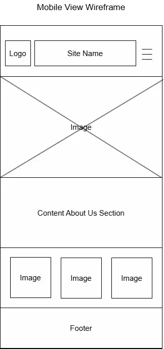
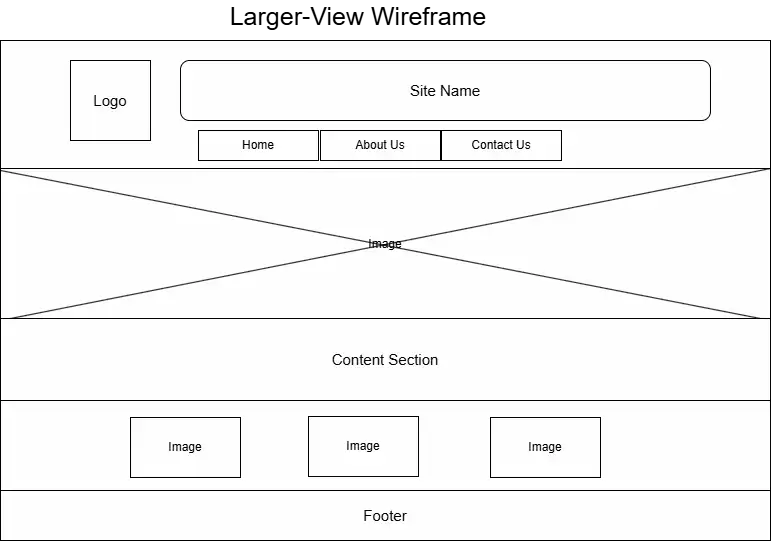

Site Name: Tetralogy of Fallot Lifeline
This name is an educational resource that conveys support, resources, and guidance understanding Tetralogy of Fallot, a congenital heart disease.
Optional Domain Availability: https://www.domainhere.com
Site Purpose
This website will serve as a comprehensive resource hub for the Tetralogy of Fallot (ToF) community. The site will provide clear, accessible medical information, host a platform for sharing personal recovery journeys, and connect families with support networks. It aims to empower individuals with knowledge, reduce the isolation of a diagnosis, and inspire action toward greater understanding and support for those living with Congenital Heart Defects.
Target Audience
- Parents and caregivers of children recently diagnosed with Tetralogy of Fallot.
- Adults living with repaired ToF (GUCH - Grown Up Congenital Heart).
- Family members and friends seeking to understand the condition to support loved ones.
- Medical students or advocates looking for patient-friendly educational materials.
Scenarios
- A terrified parent visits the site immediately after a doctor's appointment. They land on the "Start Here" page to find a reassuring, step-by-step guide on what ToF is and what surgery entails, helping them calm down.
- An adult patient is worried about exercise limitations. They visit the "Living with ToF" section to read blog posts from other active adults with ToF and find guidelines on physical activity.
- A friend of a patient wants to participate in Heart Month. They visit the website to find shareable graphics, awareness facts, and links to donate or participate in a local heart walk.
SEO Plan
- Keywords: Target long-tail keywords like "Tetralogy of Fallot life expectancy," "ToF surgery recovery timeline," "Adult ToF symptoms," and "Congenital heart defect support."
- Content Strategy: Publish a monthly "Heart Warrior" story to keep content fresh and rank for personal experience queries.
- Backlinks: Reach out to pediatric hospitals and CHD alliances (like the Children's Heart Foundation) to list this site as a trusted patient resource.
- Technical SEO: Ensure fast load times for mobile users (parents often search from hospital waiting rooms) and use Schema markup for medical organizations.
Color Schema
Primary Color: #0057B8 (Royal Blue) - Represents trust, medical professionalism, and is half of the CHD awareness ribbon color - used for header and footer.
Secondary Color: #D11F38 (Heart Red) - Used for buttons and calls to action; represents the heart and vitality.
Text Color: #333333 (Dark Charcoal) - Softer than black, easier to read for long periods — used for body text and cards.
Background Color: #F9FAFB (Off-White/Light Gray) - To reduce eye strain and keep the focus on the content.
Typography
Headings: Montserrat (san-serif, bold)
Body Text: Open Sans (sans-serif, regular)
Other fonts may be used for special sections if needed.
Site Map
Home: (Hero image of a healthy child/adult, Mission Statement, Quick Links)
About ToF: (Anatomy 101, The 4 Defects, Diagnosis methods)
Contact: Feedback form, Newsletter signup
Wireframe
Mobile View
Mobile Wireframe Image
Desktop / Tablet View
Desktop Wireframe Image
